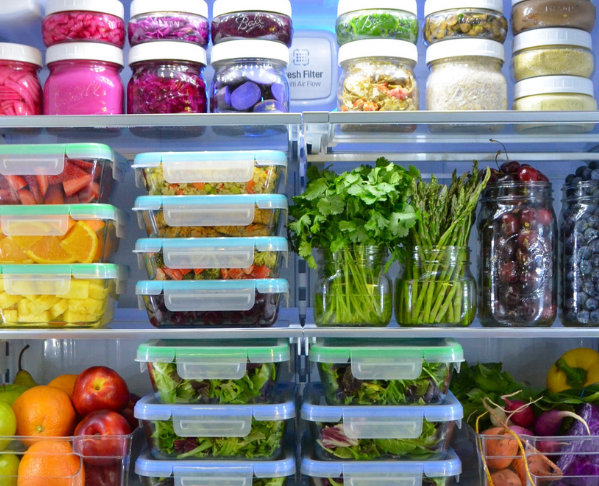
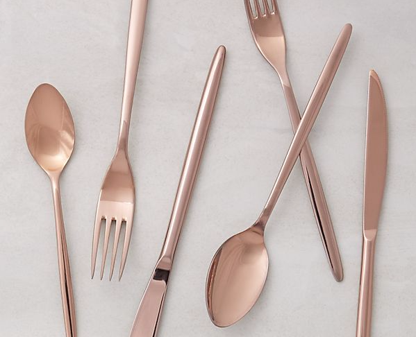

Blog
Articulos que encuentro y comparto o escribo sobre cocinar, tips y utensilios para la cocina


Must have de utensilios.
Artículos básicos que me parecen indispensables para cualquier cocina.
Leer más.jpeg)
Verduras y Frutas
Lista que me sirve de guía cada vez que tengo que ir a la verduleria (según la estación).
Leer másMust have de utensilios.
Artículos básicos que me parecen indispensables para cualquier cocina.
Leer más
Verduras y Frutas
Lista que me sirve de guía cada vez que tengo que ir a la verduleria (según la estación).
Leer más